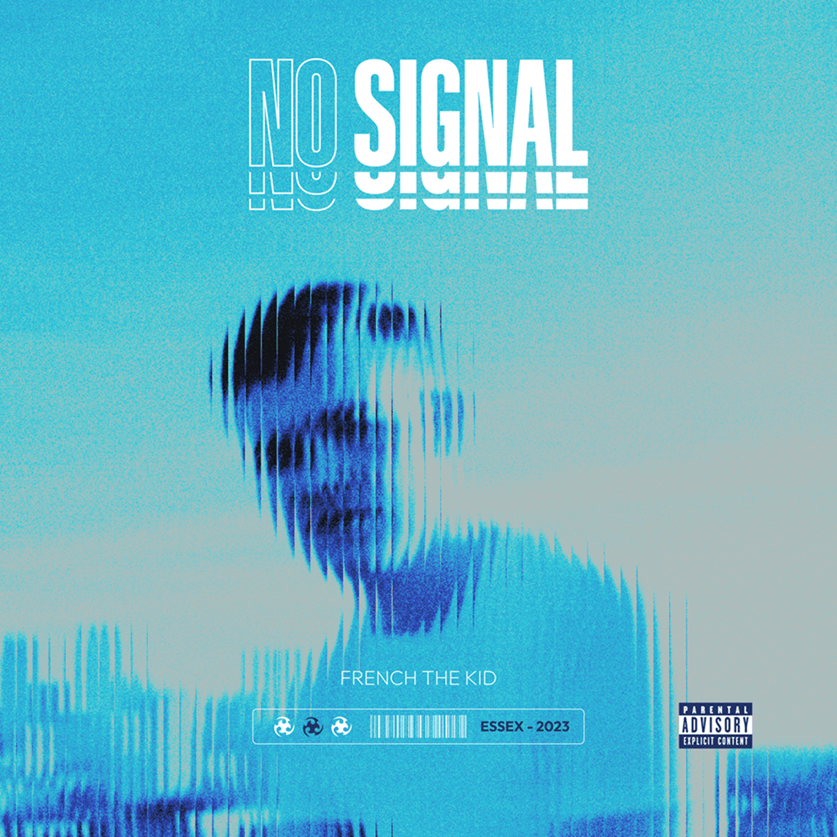
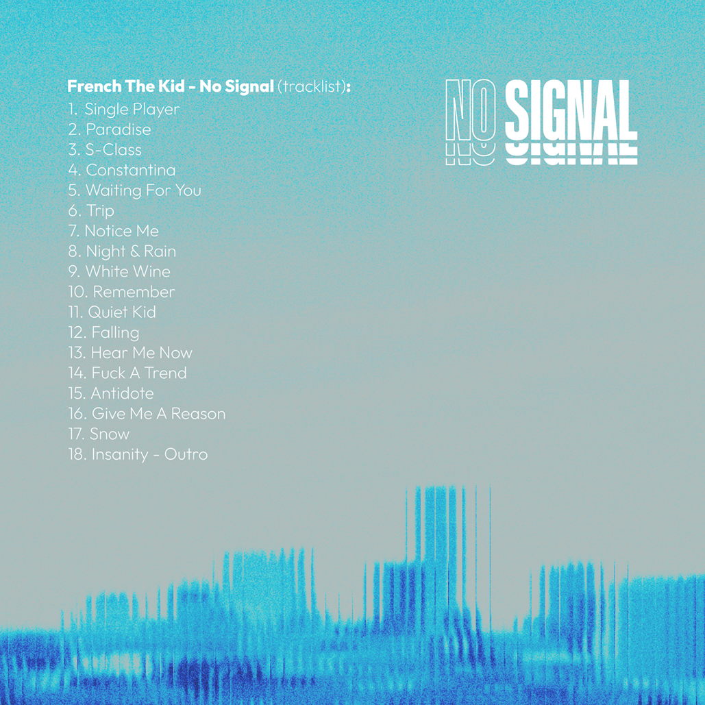

Redesign obalu CD High Off Life
Redesign coveru albu High Off Life od Futura. Původní album má na coveru jen fotografii. Já jsem kromě ní také využil výraznou typografii.


Redesign obalu CD No Signal
Redesign obalu CD No Signal od interpreta French The Kid. Původní album obsahuje upravenou fotografii s jednoduchou typografií. Nový design jsem se snažil oživit hlavně barvou a výraznější typografií.


